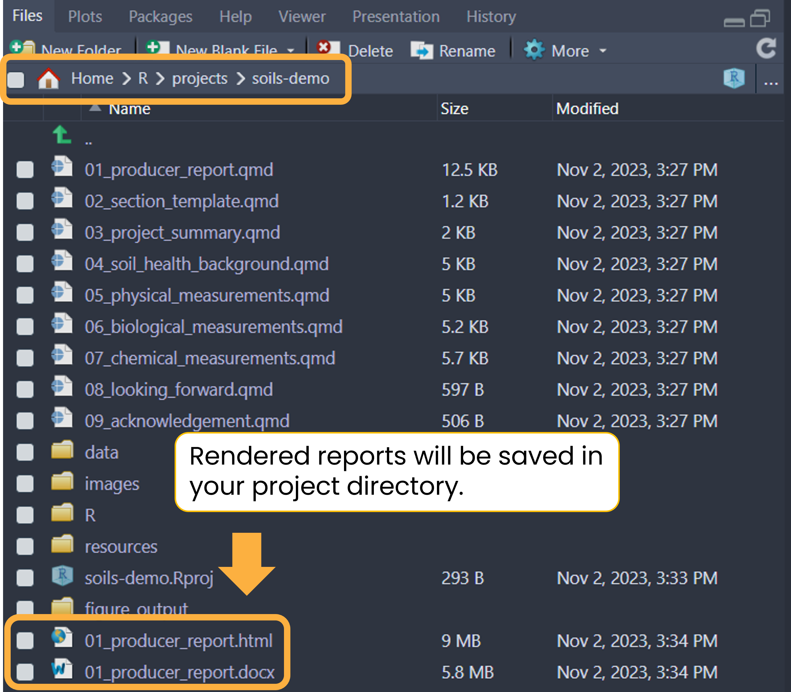

Before modifying anything (data, report content, or style), render the example report with the anonymized built-in data to ensure your system is set up correctly.
Open 01_producer-report.qmd. Click the
Render button to generate an HTML report or the
down arrow (▼) to open a drop down menu to choose between
HTML or MS Word. Try rendering the example report in both formats.
If rendering to HTML, you can check the Render on Save
option to automatically update the preview whenever you save the
document.

If the rendered report doesn’t immediately open, you can find it in
your project directory with the same name as the main Quarto
.qmd file (01_producer-report.qmd). Newly
rendered files can usually be found at the bottom of the files pane.

It should take no more than one minute to render a single example report.
Demo videos
HTML
MS Word
See the rendered example reports.